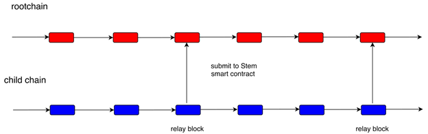
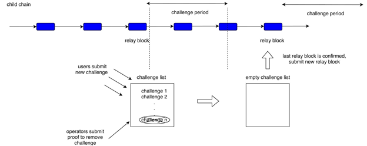

2019-09-27
1. Introduction
While blockchain is considered as a milestone technology for the value internet, its low throughput has been a major bottleneck for building real-world applications. Several factors are hindering the throughput of blockchain. For example, the block time of a decentralized blockchain has to be reasonably long enough for all the nodes to reached consensus. The block time of bitcoin is about 10 minutes. What’s more, the size of a block could not be too big for fast synchronization speed. There are some efforts in increasing the scalability of blockchain such as sharding and subchain. The idea of sharding is to divide the blockchain network/state into multiple shards which are essentially equivalent to each other. Subchain refers to a master-slave design where the master chain has different functionalities than the slave chains. The slave chains can use a more centralized consensus mechanism than the master chain to increase the throughput to meet the needs of various applications.
A well-known subchain framework Plasma, which is a layer 2 scaling solution for Ethereum. Its basic idea is to use a smart contract on the rootchain as an anchor for child chains. Funds can be transferred between the rootchain and child chains. While funds can be transferred within a child chain efficiently, they can also be withdrawn to the rootchain. There are various Plasma models such as Plasma MVP, Plasma Cash, Plasma snapp, Gluon Plasma etc. Plasma MVP and Plasma Cash adopts the UTXO model in the child chain while other models like Plasma snapp and Gluon Plasma use account-based model in the child chain. In the UTXO model, the tokens that one owns is split into multiple pieces. Each piece is in the form of a transaction output that has not been spent by the receiver. While the UTXO model is good for tracking tokens, it also has limitations in terms of fund management and smart contract compatibility. With account-based models, Plasma snapp and Gluon Plasma have better flexibility. However, Plasma snapp doesn’t support partial exit off funds in child chain. It doesn’t provide a complete solution for the data unavailability problem neither. Gluon Plasma supports partial exit off funds but has to turn to user voting when some child chain data is found unavailable to the users. Therefore, it is necessary to develop a more reliable subchain framework with powerful features.
Seele Stem aims to provide a full set of useful features while preserving the safety of the funds in the child chain. It supports account-based child chains, safe and flexible deposit/exit operations, fast access to the account balance in the Stem smart contract, customizable state finality of the child chain. Most importantly, it has a complete solution to the data unavailability problem which is not handled well in other Plasma proposals. In the following, we will give an overview of Seele Stem and its major features.
2. Overview of Seele Stem
Seele Stem has two major components: a child chain and a Stem smart contract on the rootchain. The child chain can support various consensus mechanisms such as POS and DPOS. The Stem smart contract acts as an interface between the rootchain and the child chain. See Fig 1.

Fig 1. Rootchain and child chain
There are three roles in Seele Stem: creator, operator and user. See Fig 2. Creator is the creator of the Stem smart contract. A certain amount of deposit is required for the contract creation.
Operators are registered in the Stem smart contract and responsible for block production in the child chain. They can be registered at the creation of the Stem smart contract or later. An initial deposit is required for every operator which is spendable in the child chain. But operators need to make sure they keep a minimum amount of deposit. One of the major incentives for the operators is that they can get transaction fee from block production. The transaction fee could be extracted from the Stem smart contract on the rootchain.

Fig 2. The roles in Seele Stem
Users can deposit funds in the Stem smart contract and receive corresponding amount of tokens in the child chain. They are then able to engage in most of the activities in the child chain. However, users do not have the rights to produce blocks in the child chain. Since the operators could be malicious, Seele Stem enables users to supervise the operators without sacrificing the efficiency of block production.
The account balance of operators and users are stored in the Stem smart contract. Operators or creator submit relay blocks to the Stem smart contract within a certain frequency. Relay blocks update the balances in the Stem smart contract and provide some hashes to document the updated states. If users noticed their balances are incorrect, they can submit a challenge to the most recent relay block requesting operators to provide a proof. Correct proof removes the corresponding challenges. Relay blocks and the associated states are confirmed if no challenges exist after a challenge period. See Fig 3 for an illustration of the process.

Fig 3. Illustration of relay block submission and challenges.
To discourage malicious block submission by operators or creators, a submission bond is required for submitting every relay block. If a relay block is challenged successfully, the related submission bond is forfeited and transferred to the challengers. Similarly, to discourage malicious challenges, a challenge bond is needed for every challenge. If a challenge is removed by a correction proof, the associated challenge bond is paid to the proof submitter. The above mechanism provides economic incentives for all the roles to act appropriately.
Besides depositing funds into the child chain, exiting funds from the child chain is another key function of Seele Stem. An exit request is approved if and only if the associated account has enough balance at the last confirmed state. Operators could exit from the child chain completely if they don’t want to be operators anymore. They could also choose to withdraw transaction fee from child chain. For users, partial fund exit (i.e. the users can choose to exit part of their funds from the child chain) is supported which is a very user-friendly feature while many other Plasma framework only supports a full fund exit. Seele Stem ensures nothing can block the exit if the exit is reasonable. The deposit/exit operations require state changes on both the rootchain and the child chain. The design of Seele Stem makes sure that the rootchain and the child chain operate independently between any two relay blocks, which results in greater efficiency.
3. Major features of Seele Stem
There are several features distinguish Seele Stem from other Plasma models.
a. Solution to data unavailability problem
Data unavailability problem refers to a situation where child chain users couldn’t challenge the operators in the Stem smart contract because the operators hide the information from users. It has been a headache for most of the Plasma models. For example, Gluon Plasma has some similarities to Seele Stem where it is also account-based and updates the account states every time it submits a relay block. However, it couldn’t handle data unavailability problem directly and resorts to user voting which could be unsafe, especially when the child chain doesn’t have many users. Seele Stem enables users to protect their own accounts without relying on other users. Instead of submitting fraud proof by themselves, users can ask the operators to submit validity proof to the update of a certain account. Since the operators are supposed to have all the block data of the child chain, data unavailability problem is mitigated. Together with other designs such as a mechanism to avoid inflation of child chain, Seele Stem is able to solve the data unavailability problem completely.
b. Account-based
Many previous Plasma models such as Plasma MVP use the UTXO model to track the flow of child chain assets. But UTXO model has its disadvantages. For example, it is unfriendly to smart contracts and inconvenient for handling large number of transactions. Account-based blockchains are more suitable for the transition of complicated states compared to UTXO-based blockchains, and thus are more compatible with smart contracts. Aiming to provide support for smart contracts in child chains, Seele Stem is account-based. The account balances are stored in both the child chain and Stem smart contract. The balances in the Stem smart contract are updated only when a relay block is submitted.
c. Customizable finality
Seele Stem has a customizable finality which means the child chain status in the Stem smart contract is confirmed with a customizable frequency. The balances of all the operator and user accounts are recorded in the Stem smart contract on the rootchain. For every certain period of time, child chain operators submit a relay block to the Stem smart contract and updates some account balances. The relay block is open to challenge in a fixed challenge period. The relay block is confirmed once the challenge period is over and all the challenges (if any) are correctly responded. Along with the confirmation of the relay block, all the balance updates are also confirmed and the next relay block is allowed to be submitted. If the relay block cannot be confirmed when the challenge period is over, it must be reversed so that the Stem smart contract can continue to accept new relay block. Note that at most one relay block can be reversed.
d. Flexible deposit and exit
In Seele Stem，operators and users can deposit funds into the child chain and withdraw from it securely. While some other Plasma models only support full exit of an account, Seele Stem supports both partial and full funds exit for users. All the deposit and exit requests exist in the Stem smart contract for three periods: request period, execution period and post-execution period. The requests in request period are cancellable. Furthermore, if the deposit/exit requests are not executed in the child chain as expected, operators/users can still exit their funds from the Stem smart contract on the rootchain.
e. Small footprint on the rootchain
Upon the submission of each relay block, the Stem smart contract doesn’t store a full block. Instead, it only records the submitter, timestamp, balance update and the roots of two merkle trees. One of the merkle tree is a so-called balance merkle tree whose leaves represents account balances. Another merkle tree is called a recent-transaction merkle tree. Each leaf of it records the transactions of the same account between last relay block and the new relay block. The increased storage on rootchain is actually small. Therefore, Seele rootchain is able to host many child chains at the same time.
4. Conclusion
In this article, we introduced Seele Stem, which is a new protocol for increasing blockchain scalability. It is designed to be safe, efficient and user-friendly. Further technical details about Seele Stem will be published in another article. In the future, we will look into the possibilities of general state Plasma so that the safety of child chain smart contracts will be fully protected.